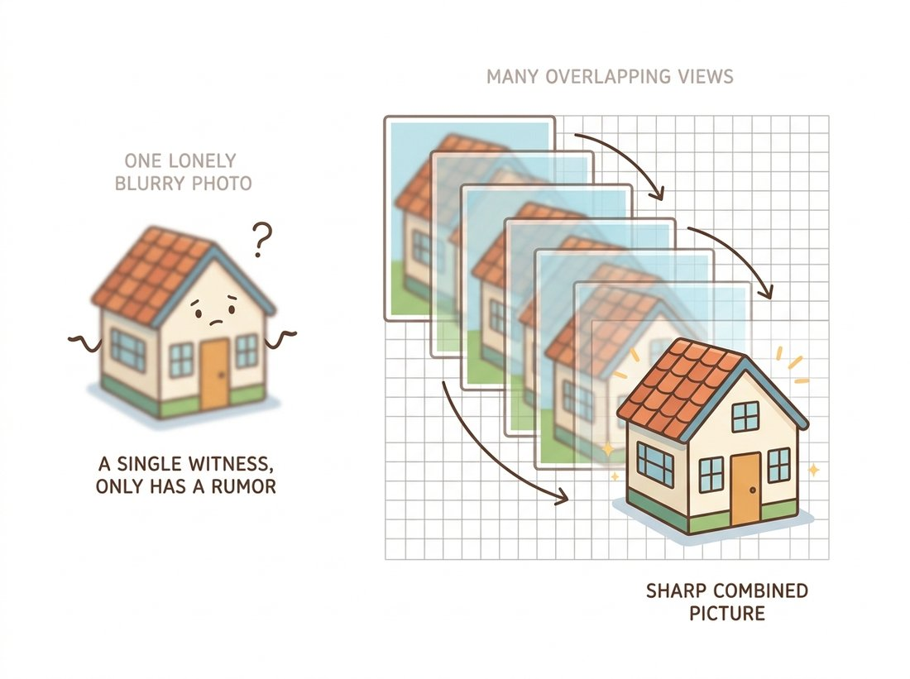

"One frame is a rumor. Eight frames with sub-pixel shifts are a sworn deposition, and I am the court stenographer."
A Meticulous Multi-Frame Super-Resolver
Single-image interpolation redistributes the information you have; multi-frame super-resolution collects information you did not have. Each slightly shifted, aliased low-resolution frame samples the scene at a different phase. Registered to sub-pixel accuracy and fused onto a fine grid, those samples reconstruct frequencies that no single frame contains. The entire discipline lives inside the words "slightly shifted" and inside the aliasing that everyone else in this book tries to remove.
The previous sections repaired pixels that were noisy (Section 7.2), smeared (Section 7.3), or missing (Section 7.4). This section asks for pixels that were never captured at all: given a low-resolution image, produce a higher-resolution one. Phrased that way it sounds impossible, and for a single image, in the strict information-theoretic sense, it is. The classical escape is to stop asking one image to do it. Before deep networks learned to hallucinate plausible detail, super-resolution meant honest accounting: finding measurements that genuinely exist, scattered across multiple frames, and assembling them. The illustration below captures the intuition: one frame is a rumor, but several slightly shifted frames are testimony you can stack.

1. Adding Pixels Is Not Adding Information Beginner
Chapter 5 built the interpolation toolbox: bilinear, bicubic, Lanczos. All of them can resize an image to any dimensions you like, and none of them perform super-resolution. The sampling theorem from Chapter 4 says why: a grid of $N \times N$ samples can represent spatial frequencies up to its Nyquist limit and nothing above. Interpolating to $2N \times 2N$ creates new pixel values, but every one of them is a weighted average of the original samples; the spectrum gains no content beyond the original Nyquist limit. Put a number on it: a 2x upscale quadruples the pixel count, four output pixels for every input pixel, yet adds exactly zero bits of new information about the scene. The result is larger, smoother, and exactly as informative. Upscaled text remains unreadable at any size, just more politely blurred.
The cinematic "enhance" command trains everyone to believe that producing a bigger, crisper image means recovering real detail. It does not. A single-image upscaler, classical or neural, cannot exceed the original Nyquist limit from Chapter 4: the information simply is not in the pixels. What a modern network adds when it "sharpens" a license plate is not measured evidence but a plausible guess drawn from its training prior, the same hallucination risk the practical example below turns on. The tell is that two different upscalers, or the same one with a different seed, produce different "detail" from identical input; genuine information would be reproducible. Multi-frame methods (the rest of this section) genuinely add detail because they add measurements; one image stretched larger never does. Bigger is not the same as more informed.
The "enhance" scene, where a detective squints at four blobs of surveillance footage and orders the computer to produce a license plate, is such a reliable fixture of crime television that signal-processing courses use it as a running gag. The joke has aged strangely: multi-frame methods (this section) can legitimately extract a plate that no single frame shows, and generative models (later in this book) will cheerfully print you a crisp plate that was never in the data at all. The detective's question has quietly changed from "can we enhance it?" to "can we trust what the enhancer says?"
So where could genuinely new information come from? Three honest sources exist: more measurements of the same scene (multiple frames, the core of this section), prior knowledge about the scene's structure (the example-based methods discussed later in this section), and knowledge of the camera's own blur (folding in the deconvolution of Section 7.3). Everything classical is some mix of the three.
2. The Observation Model, and Aliasing the Ally Intermediate
As always in this chapter, the cure starts with a forward model. Let $x$ be the high-resolution (HR) image we want, and let each captured low-resolution (LR) frame $y_k$ be produced by warping, blurring, and downsampling it:
$$ y_k = D \, B \, W_k \, x + n_k , $$where $W_k$ is a geometric warp (for handheld video, nearly a pure translation between consecutive frames), $B$ is the camera blur from Section 7.3, $D$ is decimation to the coarse grid, and $n_k$ is noise from Section 7.1. Read the operators right to left, as a recipe applied in order: take the HR image $x$, warp it, blur it, throw away pixels to shrink it, then add noise. The result is one captured frame. Each frame is a different set of linear equations about the same unknown $x$; collect enough independent equations and the system becomes solvable. The independence comes from the warps: if frame $k$ is shifted by half an LR pixel relative to frame $j$, its sensor wells integrate different parts of the scene, and its equations are new.
Here is the counterintuitive heart of the subject: this only works if the LR frames are aliased. Chapter 4 presented aliasing as a sin: frequencies above Nyquist fold down and masquerade as low frequencies. But masquerading information is still information. In an aliased frame, the high frequencies of the scene are present, folded and entangled with the low ones; different sub-pixel shifts entangle them with different phases, and a set of differently-shifted frames gives you the linear system that disentangles them. A camera with a perfect anti-aliasing filter destroys those high frequencies before sampling, and then no quantity of frames can recover them: the equations all say the same thing. Figure 7.5.1 shows the mechanics on the sampling grid.
3. Shift-and-Add: Super-Resolution by Bookkeeping Intermediate
The simplest fusion algorithm follows Figure 7.5.1 literally. Estimate each frame's shift relative to a reference, scale the shifts up to the fine grid, then deposit every LR pixel onto its registered fine-grid position and average whatever lands in each bin. Registration must be sub-pixel accurate, and Chapter 4 already supplied the tool: phase correlation, which reads translation off the Fourier phase difference and, with local upsampling of the correlation peak, resolves shifts to a few hundredths of a pixel. Code 7.5.1 runs the full pipeline on synthetic frames so the gain over bicubic is measurable.
import numpy as np
import cv2
from scipy.ndimage import shift as nd_shift
from skimage import data, img_as_float
from skimage.registration import phase_cross_correlation
from skimage.metrics import peak_signal_noise_ratio as psnr
rng = np.random.default_rng(seed=7)
hr = img_as_float(data.camera()) # ground-truth HR, 512x512
SCALE = 2
def capture_lr(hr_img, dy, dx):
"""One observation: sub-pixel shift, mild blur, decimate, noise."""
shifted = nd_shift(hr_img, (dy, dx), order=3, mode='reflect')
blurred = cv2.GaussianBlur(shifted, (3, 3), 0.6)
lr = blurred[::SCALE, ::SCALE] # decimation keeps aliasing!
return np.clip(lr + rng.normal(0, 0.01, lr.shape), 0, 1)
true_shifts = [(0.0, 0.0)] + [tuple(rng.uniform(0, SCALE, 2)) for _ in range(7)]
frames = [capture_lr(hr, dy, dx) for dy, dx in true_shifts]
# --- Register every frame to frame 0, to sub-pixel precision ---
est = [phase_cross_correlation(frames[0], f, upsample_factor=50)[0]
for f in frames] # shift in LR pixels
# --- Deposit samples onto the fine grid, average per bin ---
acc = np.zeros(hr.shape)
hits = np.zeros(hr.shape)
for f, (sy, sx) in zip(frames, est):
ys = (np.arange(f.shape[0]) * SCALE - sy * SCALE).round().astype(int)
xs = (np.arange(f.shape[1]) * SCALE - sx * SCALE).round().astype(int)
yy, xx = np.meshgrid(ys % hr.shape[0], xs % hr.shape[1], indexing='ij')
np.add.at(acc, (yy, xx), f)
np.add.at(hits, (yy, xx), 1)
fused = np.where(hits > 0, acc / np.maximum(hits, 1), 0)
empty = hits == 0 # fine-grid bins nobody hit
fused[empty] = cv2.resize(frames[0], hr.shape[::-1],
interpolation=cv2.INTER_CUBIC)[empty]
bicubic = cv2.resize(frames[0], hr.shape[::-1], interpolation=cv2.INTER_CUBIC)
print(f"bicubic x2 (1 frame): PSNR = {psnr(hr, bicubic):.1f} dB")
print(f"shift-and-add (8 frames): PSNR = {psnr(hr, fused):.1f} dB")
INTER_AREA here would destroy the very information we are harvesting.bicubic x2 (1 frame): PSNR = 27.5 dB shift-and-add (8 frames): PSNR = 31.2 dB
Wrap Code 7.5.1 in a loop over the number of captured frames, building frames from the first 1, 2, 4, 8, then 16 entries (draw a few extra shifts so 16 is available) and printing the fused PSNR for each. You will see the central claim of multi-frame super-resolution become a curve: the jump from 1 to 2 frames is large, 2 to 4 still clearly helps, and somewhere past 8 the gains flatten into diminishing returns as every sub-pixel phase has already been sampled and the remaining error is noise and registration slop rather than missing measurements. Then flip one detail and rerun: change the decimation in capture_lr from bare slicing [::SCALE, ::SCALE] to an anti-aliased cv2.resize(..., interpolation=cv2.INTER_AREA) downscale, and watch the whole advantage collapse toward the bicubic baseline. That second experiment is the section's counterintuitive heart made tangible: without aliasing in the frames, there is nothing for the extra frames to disentangle.
4. Iterative Back-Projection: Simulate, Compare, Correct Advanced
Shift-and-add ignores two terms of the observation model: the blur $B$, and the fact that an LR pixel is an average over a fine-grid neighborhood rather than a point sample. Irani and Peleg's iterative back-projection (1991) honors the full model with a loop you have already met twice in this chapter: guess the HR image, push the guess forward through the model to simulate every LR frame, compare against the real frames, and push the errors backward to correct the guess. Formally,
$$ x^{(t+1)} = x^{(t)} + \sum_k U_k\!\left( y_k - D B W_k\, x^{(t)} \right), $$where $U_k$ upsamples each residual and routes it back through the inverse warp. Code 7.5.2 implements it compactly, seeding the loop with the shift-and-add result.
def simulate_lr(x, sy, sx):
"""The forward model for frame k, matching capture_lr (minus noise)."""
warped = nd_shift(x, (sy * SCALE, sx * SCALE), order=3, mode='reflect')
return cv2.GaussianBlur(warped, (3, 3), 0.6)[::SCALE, ::SCALE]
x_hat = fused.copy()
for _ in range(15):
correction = np.zeros_like(x_hat)
for f, (sy, sx) in zip(frames, est):
residual = f - simulate_lr(x_hat, sy, sx) # what we got wrong
up = cv2.resize(residual, x_hat.shape[::-1],
interpolation=cv2.INTER_CUBIC)
correction += nd_shift(up, (-sy * SCALE, -sx * SCALE),
order=3, mode='reflect')
x_hat = np.clip(x_hat + correction / len(frames), 0, 1)
print(f"back-projection (15 iters): PSNR = {psnr(hr, x_hat):.1f} dB")
back-projection (15 iters): PSNR = 32.6 dB
Look at what this chapter has quietly repeated three times. Richardson-Lucy: blur the guess, compare with the observation, push the ratio back. Back-projection: simulate the captures from the guess, compare, push the residuals back. Even the Anscombe sandwich was "model the noise forward, operate, invert." When you have a trustworthy forward model and an ill-posed inverse, iterate the forward model rather than inverting it directly. This pattern survives the deep-learning transition intact: diffusion-based restoration in Chapter 33 guides its sampling loop with exactly these data-consistency corrections, a back-projection step wearing a generative prior.
5. Single-Image Routes, and the Bridge to Learning Intermediate
When only one image exists, the missing information must come from priors, and the classical era built a clear progression of them. Edge-directed methods sharpened interpolation by snapping it to detected contours: honest, mild gains. Example-based super-resolution (Freeman et al., 2002) was the conceptual leap: build a dictionary of corresponding (LR patch, HR patch) pairs from training images, then assemble the output by looking up each input patch's HR counterpart. Sparse-coding variants (Yang et al., 2010) made the dictionary compact and the lookup a convex optimization, and Glasner et al. (2009) showed the dictionary could come from the input image itself, exploiting the cross-scale self-similarity cousin of Section 7.2's patch prior. Read those pipelines closely, patch encoding, a learned mapping, patch aggregation, and you can see SRCNN (2015) coming: it replaced each hand-built stage with a convolutional layer trained end to end, outperformed every dictionary method, and ended the classical era in three layers. The arc from hand-crafted pipeline to learned network repeats across all of vision, and Chapter 28 picks up super-resolution's deep, efficiency-obsessed present.
cv2.dnn_superresOpenCV's contrib module wraps pretrained single-image SR networks (including FSRCNN, the fast successor of SRCNN, and EDSR) behind a four-line API, the practical replacement for everything in this section when you have one frame and no forensic constraints:
from cv2 import dnn_superres # pip install opencv-contrib-python
sr = dnn_superres.DnnSuperResImpl_create()
sr.readModel('FSRCNN_x2.pb') # weights from the official repo
sr.setModel('fsrcnn', 2)
upscaled = sr.upsample(lr_bgr_uint8) # uint8 BGR in, upscaled out
dnn_superres interface; swap in 'edsr' weights for quality over speed.Our 60-line multi-frame pipeline becomes 4 lines (plus a weight download), and on a single frame the network will beat bicubic by margins the classical single-image methods never reached. Internally it handles the color-space bookkeeping (most SR networks enhance luma only), tiling, and pre/post-normalization. What it cannot do is harvest sub-pixel evidence from multiple frames; the two approaches are complementary, not competing.
6. Honest Limits, and Why Honesty Matters Beginner
How far can multi-frame methods go? In principle, $N^2$ ideally-placed frames support an $N\times$ factor; in practice the budget is spent by three taxes. Registration error: fusing at 4x demands registration good to a quarter of an LR pixel, and errors blur exactly the detail being recovered. Noise: each fine-grid bin receives only a few samples, so the averaging that denoised at 2x thins out. And the optical blur $B$: once the lens itself cannot pass a frequency, no sampling cleverness retrieves it, the same hard wall as the spectral zeros of Section 7.3. Practical systems top out around 2x to 4x, and the literature's standard advice stands: past there, you are deblurring and denoising, not resolving.
Who: A consultant retained by an insurance company's special investigations unit.
Situation: A hit-and-run in a parking garage, captured by a ceiling camera at 1080p. The suspect plate occupied 41 pixels across; individual frames showed an unreadable smear. The claimant's version of events hinged on identifying the vehicle.
Problem: A vendor tool with a learned "AI enhance" mode produced a crisply readable plate, and the legal team rejected it immediately: a model that can invent plausible glyphs is useless as evidence, since the output reflects its training prior as much as the scene.
Decision: The car idled for four seconds, drifting slightly: 90 usable frames with natural sub-pixel motion. The consultant ran exactly this section's pipeline, phase-correlation registration of the plate region, shift-and-add at 3x, ten back-projection iterations, and documented every step, every frame's estimated shift, and the forward model.
Result: Six of seven characters resolved unambiguously; the seventh narrowed to two candidates, enough for a registry match corroborated by paint evidence. The method survived expert challenge because every output pixel was an auditable linear combination of measured data.
Lesson: Multi-frame super-resolution's superpower is not its PSNR, it is its provenance. When the answer must be defended, "harvested" beats "hallucinated," and knowing both toolkits lets you choose deliberately.
The classical pipeline of this section did not die; it moved into your phone. Google's Super Res Zoom, built on the handheld multi-frame pipeline of Wronski et al. (SIGGRAPH 2019), runs registration and robust fusion on every burst, using your hand tremor as the shift generator; Apple's Deep Fusion plays the same game. The learned single-image line, meanwhile, went generative: Real-ESRGAN (2021) trained on the compound degradations of Section 7.1 and became the default open-source upscaler, SUPIR (Yu et al., CVPR 2024) scaled diffusion-prior restoration to billions of parameters, and OSEDiff (Wu et al., NeurIPS 2024) distilled diffusion SR into a single sampling step, fast enough for interactive use. The field's open tension is exactly the one in the practical example above: perceptual quality keeps improving while pixel-evidence fidelity does not, and the upscalers inside text-to-image systems (Chapter 34) sit unapologetically at the hallucination end.
(a) Explain, using Figure 7.5.1 and the sampling discussion of Chapter 4, why a camera with a perfect optical anti-aliasing filter defeats multi-frame super-resolution no matter how many frames are captured. (b) Many modern cameras omit the anti-aliasing filter to maximize per-frame sharpness; what does this trade away, and why is it the right trade for a burst-photography pipeline? (c) Why did Code 7.5.1 decimate with bare slicing instead of cv2.INTER_AREA?
Extend Code 7.5.1 to sweep the number of frames $N \in \{2, 4, 8, 16, 32\}$ at scale 2x, plotting fused PSNR against $N$ (average 5 random shift draws each). Then repeat at 4x. Where does each curve flatten, and why? Relate the flattening points to the three taxes (registration error, noise, optical blur) discussed above, and check one prediction: adding frame noise ($\sigma = 0.03$) should shift the 4x curve down more than the 2x curve.
Render an image containing random 5-character strings at a size where 2x downsampling makes them marginally unreadable. Reconstruct at 2x via (a) bicubic, (b) the multi-frame pipeline of Codes 7.5.1 and 7.5.2 from 8 shifted captures, and (c) a pretrained single-image network via Code 7.5.3. Measure character-recognition accuracy (your eyes or an OCR package) and PSNR for each. Then make the critical observation: when method (c) gets a character wrong, how does it get it wrong, and why does that failure mode matter more than its average accuracy?